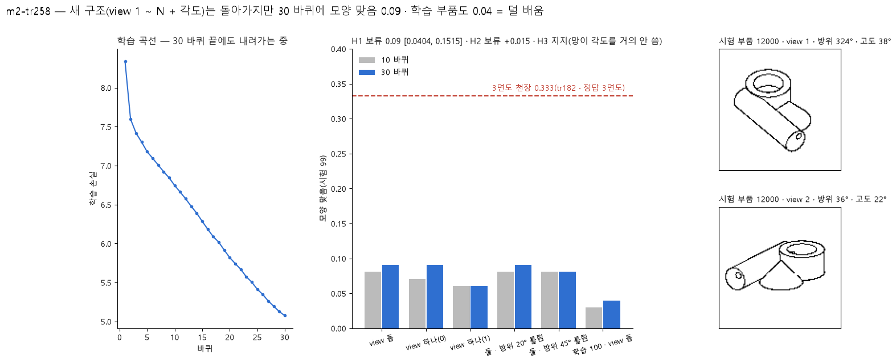

실험 m2_tr0258_h001_뷰입력
목표 G1.2 view 모음 → 파츠별 CAD code(CadQuery · 그 전 「3 면도 → 파츠별 CAD」 · 지금 M2 는 위 · 앞 · 옆 고정 세 장만 받음 → 아무 각도 N 장으로 바꿀 것 · 11-20) · G1 첫 제품 — 피규어 · 메카 사진 여러 장 + 치수 → 숨은선 3 면도 + 파츠별 CAD · G0 임의의 이미지 → CAD 코드 · 빌린 가정 4: 생성기기하 · 정답3D · 시점앎 · 정사영 · 갚는 계획: 정답 view(m1 이 완벽하다고 침)로 재는 천장 — m1 의 view(m1-tr255 A2 · m1-tr257 각도 추정)를 넣는 판에서 정답3D · 시점앎을 갚음 · 생성기기하는 원화CAD짝 시험지로 · 정사영은 원근 렌더로 그 뒤 · 목표 시험지 값: 안 잼 (!)
m2 를 view 1 ~ N 개(그 방향 선 지도 + 각도) 입력으로 바꾸면, 정답 view 로 CAD code 를 얼마나 짓나?
판정 · H1 보류(view 둘 모양 맞음 0.09 [0.04, 0.15] · 천장 0.333) · H2 보류(+0.015) · H3 지지지만 의미 없음(망이 각도를 거의 안 씀) — 새 m2 구조(view 1 ~ N + 각도)는 돌아가지만 30 바퀴에 학습 부품도 0.04 · 손실이 끝까지 내려감 = 덜 배움 · 다음: 더 배우기(바퀴 · 학습률) · 작은 묶음 외우기로 구조가 배울 수 있는지부터
| 가설 | 주장 | 결과 | 근거 |
|---|---|---|---|
| H1 | 아무 각도 view 둘(정답 선 + 정답 각도)만으로도 m2 가 3 면도 천장에 가깝게 CAD code 를 짓는다 | 보류 | 30 바퀴 · 시험 99 · 같다 3 % 0.051 · 못 지음 0 · 10 바퀴 0.081 · 학습 100 view 둘 0.04(10 바퀴 0.03) · 학습 손실 8.34 → 5.08(끝까지 내려감) · 3 면도 천장 0.333 |
| H2 | view 가 많을수록 CAD code 가 낫다 — 한 장은 안 보인 쪽 정보가 없다 | 보류 | view 하나 렌더 0 0.091 · 렌더 1 0.061 · 평균 0.076 · 둘 0.091 |
| H3 | m2 는 방위 20° 틀림에 버틴다 | 지지 | 참 각도 0.091 · 20° 0.091 · 45° 0.081 |
분석
한 줄로
물음: m2 를 view 1 ~ N 개 입력으로 바꾸면, 정답 view 로 CAD code 를 얼마나 짓나?
답: 새 구조는 돌아가지만 아직 덜 배웠다. 30 바퀴 뒤 시험 99 모양 맞음은 view 둘 0.09 로 3면도 천장(0.333)과 멀다(H1 보류). 학습에 쓴 부품으로 재도 0.04 이고 손실이 끝까지 내려가고 있었다 — 구조의 한계가 아니라 덜 배움이다. 각도를 틀려도 같은 것(H3 지지)은 망이 각도를 거의 안 쓰기 때문이라 의미가 없다.
왜 이 실험을 했나
사용자 결정으로 m1 = image → view, m2 = view 모음 → CAD code 가 됐다. 그런데 m2 는 위 · 앞 · 옆 고정 세 장만 받아서, image 에서 CAD code 까지 이어 돌릴 수 없었다(「m2 구조가 바꿨는데 업데이트 하나도 안했네」). 그래서 m2 를 새 입력으로 바꾸고, m1 이 완벽하다고 칠 때의 천장부터 쟀다(도입 관문 D0).
바꾼 것
입력 쪽만 바꿨다. 장 수 3 고정 → 1 ~ N(빈 칸 가림), 「위 · 앞 · 옆 중 어느 장」 꼬리표 3 개 → 각도(방위 · 고도)를 받는 작은 망. CNN · 칸 질의 디코더 · CAD code 짓기는 그대로이고 tr182 무게에서 이어 배웠다. 학습은 생성기 부품 11,968 × 렌더 두 장(그 방향 보이는 선 + 각도), 샘플마다 view 하나 또는 둘을 반반, 30 바퀴.
결과

| 가설 | 결과 | 판정선 | 판정 |
|---|---|---|---|
| H1 view 둘 모양 맞음 | 0.09 [0.04, 0.15] | 0.25 지지 · 0.10 기각 | 보류 |
| H2 둘 − 하나 | +0.015 [−0.010, 0.046] | +0.05 지지 · 0 기각 | 보류 |
| H3 방위 20° 틀림 떨어짐 | 0.0 [0.0, 0.0] | 0.03 이하 지지 | 지지(의미 없음) |
모양 맞음 = 위상이 같고 표면 거리 99 % 분위가 5 % 안(tr194 ~ 199 와 같은 셈). 3면도 천장은 tr182 에 정답 3면도를 넣은 값이다.
왜 이렇게 나왔나
확인한 것
- 학습 손실 8.34 → 5.08, 30 바퀴 끝에도 내려간다.
- 학습 부품 100 의 모양 맞음이 0.04(10 바퀴 0.03)로 시험보다 낮다 — 배운 부품도 못 짓는다.
- 10 바퀴 → 30 바퀴에 시험 0.081 → 0.091 로 조금 올랐다. 못 지은 부품은 0 이다.
- 각도를 20° · 45° 틀려도 0.091 · 0.081 로 거의 같다 — 10 바퀴에서도 같았다.
짐작 (아직 확인 안 함)
- 학습률 1e-4 · 30 바퀴로는 새 입력(보이는 선만 · 아무 각도)을 읽도록 다시 배우기에 모자라다.
- 각도 작은 망이 무작위로 시작해서 아직 각도 정보를 쓰지 않는다.
한계
- 한 번 · 30 바퀴만 돌렸다. 학습 부품은 tr182(11 만)보다 적은 11,968 이다.
- view 는 보이는 선만이고 3면도는 숨은선까지 있다 — 같은 정보가 아니다.
- H3 지지는 버팀이 아니라 안 씀이라 판정으로 쓰지 않는다.
배운 것과 다음
m2 를 view 입력으로 바꾸는 길은 열렸지만, 지금 숫자는 덜 배운 상태라 천장과 견줄 수 없다.
- 작은 묶음 외우기 — 부품 64 개를 외우는지로 새 입력을 망이 배울 수 있는지부터(tr199 외우기와 같은 셈).
- 외우면 더 배우기(바퀴 · 학습률 · 각도 망 시작) — 손실이 멈출 때까지.
- 그 뒤 각도 틀림(H3)을 다시 재서 m1 각도 목표를 정한다.
실험 기록
- 카드 · 뷰258.py(자료 · 흐름 · 학습 · 잼 · 재기 · 그림) · 잼.json · 흐름.png · 결과.png · 원본 out/설명/캐드부품/모델258(뷰.npz · 머리_010 · 020 · 030 · 곡선 · 잼_010 · 030)
정정 (11-20 · 감사262 · 맥락 없는 서브 에이전트 감사)
- 제 실수 1 — 「망이 각도를 거의 안 쓴다」 는 틀렸다. 각도를 20° · 45° 틀려도 모양 맞음이 같았던 것은 모양 맞음이 0.1 바닥에 붙어 있어서였다. 칸 단위로 재면 방위 +45° 에 자리 출력이 몸당 0.08(3 % 문턱의 2.7 배) 움직이고, +90° 에 축 예측이 19 % 바뀐다. 망은 각도를 쓴다.
- 제 실수 2 — 「3면도 입력(tr182)도 자리 3 % 넘는 몸 40 ~ 58 % 였으니 숫자 문제는 view 꼴 이전부터」 는 틀렸다. 3면도 망은 자리 오차 가운데가 x · y · z 모두 약 0.009(1 화소)이고 L2 0.027 로 3 % 문턱 바로 밑에 몰려 있어 비율만 높게 보였다. view 망은 L2 0.124 로 4.6 배 나쁘다. 좌표별로 보면 view 망은 위아래(z) 자리는 배우고(학습 0.016) 방위에 따라 도는 x · y 만 못 배운다(학습 0.042 · 0.049 · 시험 0.082). 두 view 의 방위 차와도 거의 무관하다(삼각측량을 안 함).
- 코드 · 데이터 버그는 없었다: 그림 ↔ 정답 짝 · 각도(다시 그려 F1 1.000) · 좌표 틀 · 손실 41 칸 · 학습 루프 짝 · 마스크 · 출력 머리 모두 정상. 학습 부품 64 개 외우기에서는 숫자도 0 으로 간다(3,000 스텝 자리 3 % 넘는 몸 0.0).
- 자료: out/설명/캐드부품/감사262/(감사A ~ H .py · json · G_요약.png)